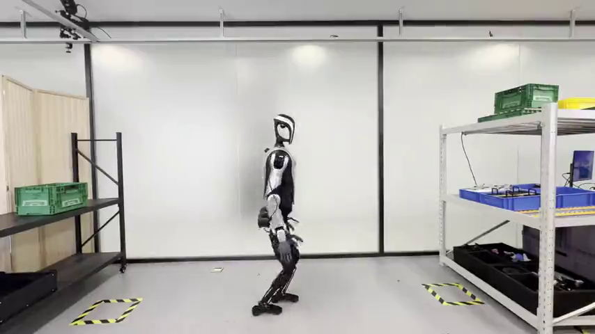

In this paper, we present a mobile manipulation system for humanoid robots to solve practical industrial part-sorting tasks, in which the robot needs to pick up a target industrial part from one workstation and transport it to another. Several functional modules are included in the system. The lower-limb control module comprises locomotion and navigation, where a Model Predictive Controller (MPC) is used together with a Whole-Body Controller (WBC) to maintain dynamic balance during walking, while a navigation model simultaneously localizes the real-time pose of the robot and outputs the desired walking control signals to ensure that the humanoid robot moves accurately between different workstations.
In terms of humanoid upper-limb manipulation, we first propose a visual perception model capable of segmenting and localizing target industrial parts. Subsequently, an arm trajectory planning model is employed to execute the manipulation. It is worth noting that our system explores different types of visual perception (learning-based and Augmented Reality (AR)-tag-based) and trajectory planning models (closed-loop learning-based and open-loop MPC-based) to enable our system to work in a wider range of industrial part-sorting scenarios.
Our system is evaluated on two practical industrial part-sorting tasks, demonstrating satisfactory performance, flexibility, and generalizability, with strong potential for deployment in real industrial settings as a replacement for manual labor.
This section provides an overview of the overall framework used in our system.